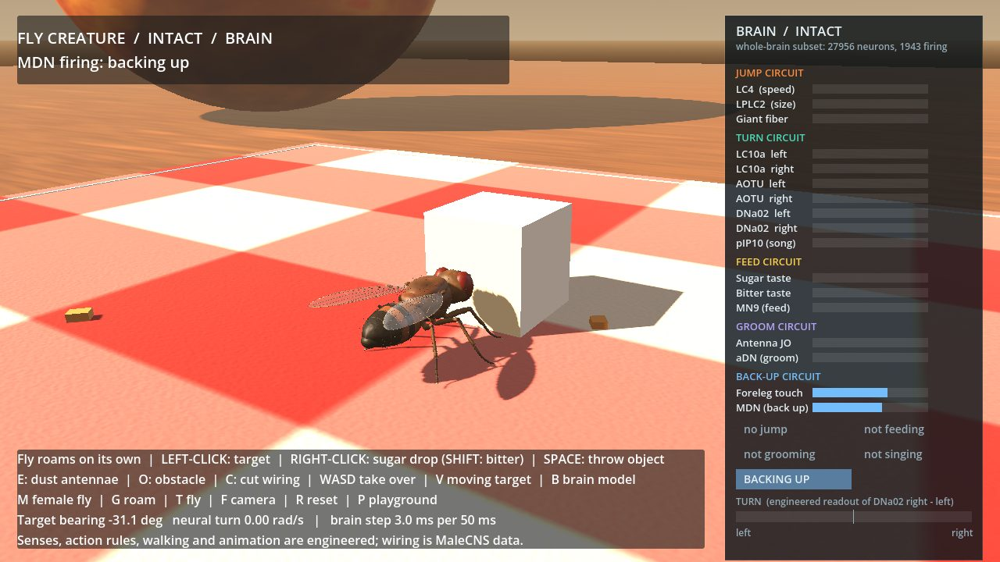
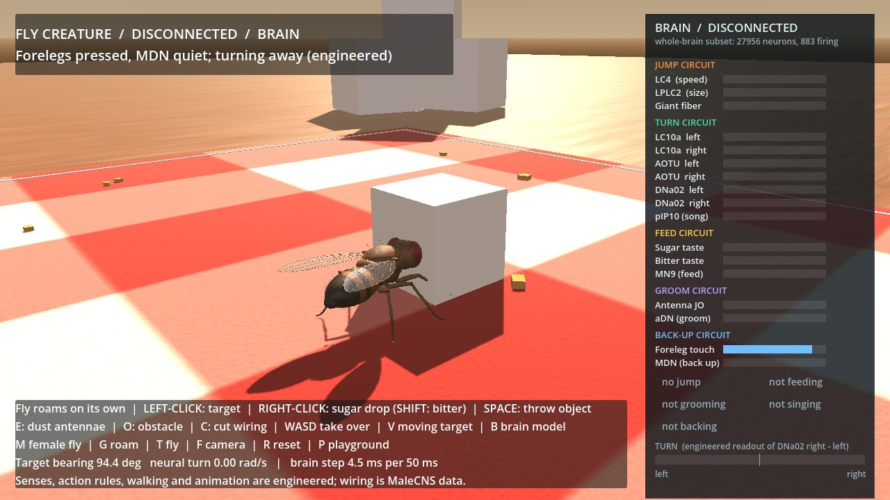
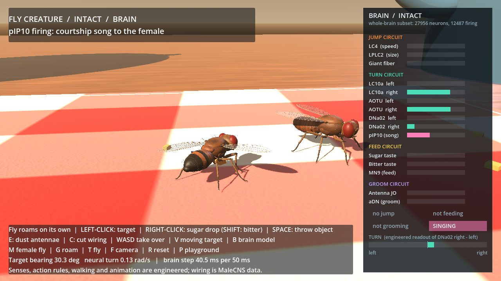

Every dot below is a real neuron from one male fruit fly, placed where its cell body sits. The connections between them come from an electron-microscope reconstruction. We turn that wiring into a crude simulation, poke one sense, and record what happens. Pick a reaction, then cut the wiring onto the neurons that trigger it.
Honest about thisThese are recordings, not live: each is one run of our Python simulator, replayed. The 1,407 neurons (mostly sensory) whose cell bodies sit outside the scanned tissue are drawn near their partners, so their positions are approximate. Watch how most of the map catches fire within a fraction of a second of most inputs and keeps going after the input stops. That is a known flaw of the simple model, not something a real fly is known to do. Why the game copes anyway.
A 4,871-neuron brain copy simulated live, a tenth of a millisecond at a time. Walk a cartoon fly into a sugar cube and watch four backing-up neurons decide.
Open the live demo →Where the wiring comes from, what the simulation assumes, how each reaction was tested against shuffled brains, and what the model gets wrong.
Read it →A 3D fly with five brain copies running at once: it jumps, steers, feeds, refuses bitter, grooms, sings to a female and backs away from walls. Runs on a desktop.
Source and records →

